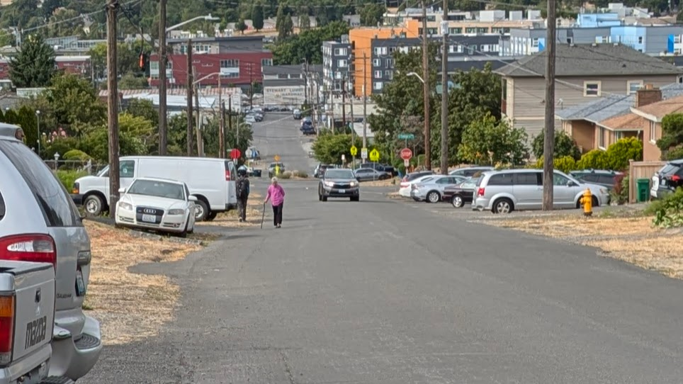

21st Ave S · North Beacon Hill · Seattle · 2026
“Walking this street feels like a matter of when a pedestrian will be hit, not if.”
— Letha, resident
North Beacon Hill · The Record
In August 2026, Seattle plans to pour asphalt on a single side of the street and call it done.
How they got here · 1889–1967
When Beacon Hill was platted in 1889, restrictive covenants were already written into Seattle property deeds. The language was explicit: “No person other than the Caucasian race.” The covenants weren’t private preferences — they were backed by federal mortgage policy. The FHA refused to insure loans in integrated neighborhoods, a practice documented in Seattle from the 1930s onward and known as redlining.
The result was a city that was legally partitioned. Most of Seattle — North Seattle, West Seattle, Magnolia, Ballard, Wallingford, Queen Anne — was made unavailable to Chinese, Japanese, Filipino, and Black families. A small number of neighborhoods were not.
“No person other than the Caucasian race.”
Language in Seattle property deeds, documented 1889 through the 1960s — UW Civil Rights & Labor History Project
The families who settled 21st Ave S and 22nd Ave S in the 1940s, 50s, and 60s were not choosing Beacon Hill over somewhere else. They were choosing Beacon Hill because somewhere else had been closed to them — legally, systematically, with the full backing of the federal government.
The neighborhoods that were closed to them were being built out in the 1950s with FHA-backed mortgages and promised sidewalks. The families on Beacon Hill received none of that. They received a block they were confined to, without sidewalks, and no promise of when that would change. In 1967, Sandi’s family moved to 21st Ave S. There was no sidewalk. There had never been one. There still isn’t one today.
In the decades after her family moved in, Sandi’s father did what the city would not: he tried to organize the neighbors to fund sidewalk construction themselves. He couldn’t get enough buy-in. The sidewalk didn’t get built.
When public infrastructure investment is withheld from communities of color, the burden of filling that gap falls on residents themselves — through self-organized funding drives, advocacy labor, and decades of effort that change nothing. The families on 21st Ave S have paid property taxes for 40 to 60 years. Those taxes funded sidewalks in other Seattle neighborhoods — neighborhoods that were, by legal design, more accessible to white families.
The 2024 Transportation Levy was supposed to be the mechanism that made self-funding unnecessary.
Its equity framework was explicitly designed to identify and correct exactly this kind of long-term, racially rooted disinvestment. It found 21st Ave S. It scored this block at the top of its own priority list — 12 out of 12 on equity, the maximum possible. And then directed the minimum possible resources to address it. The question ahead is whether the levy — and the city — will pay the debt it identified.
Coming ↓
Chapter 3 — The Promise ·
Chapter 4 — What They Gave Us Instead
Chapter 5 — The Levy ·
Chapter 6 — The Opportunity Zone ·
Chapter 7 — The Ask